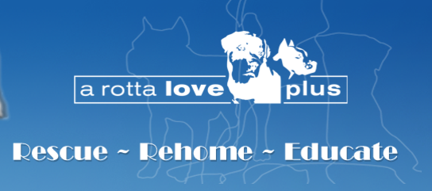

Volunteer
| Organization | Role | |
|---|---|---|
| Feed My Starving Children | Prepared and packaged meals for global distribution. | |
| Habitat For Humanity | Helped "A Brush with Kindness" program to repair and clean a local veteran's home. | |
| The PET Project MN |  |
Helped build, paint, and package Personal Energy Transportation devices for use in Third World countries where conventional wheelchairs are not feasible. |
| Second Harvest Heartland | Inspected, sorted, and packaged donated food items to be distributed to local food banks. | |
| A Rotta Love Plus |  | Fostered and rehabilitated rescued Rottweilers to prepare them for their future homes. |